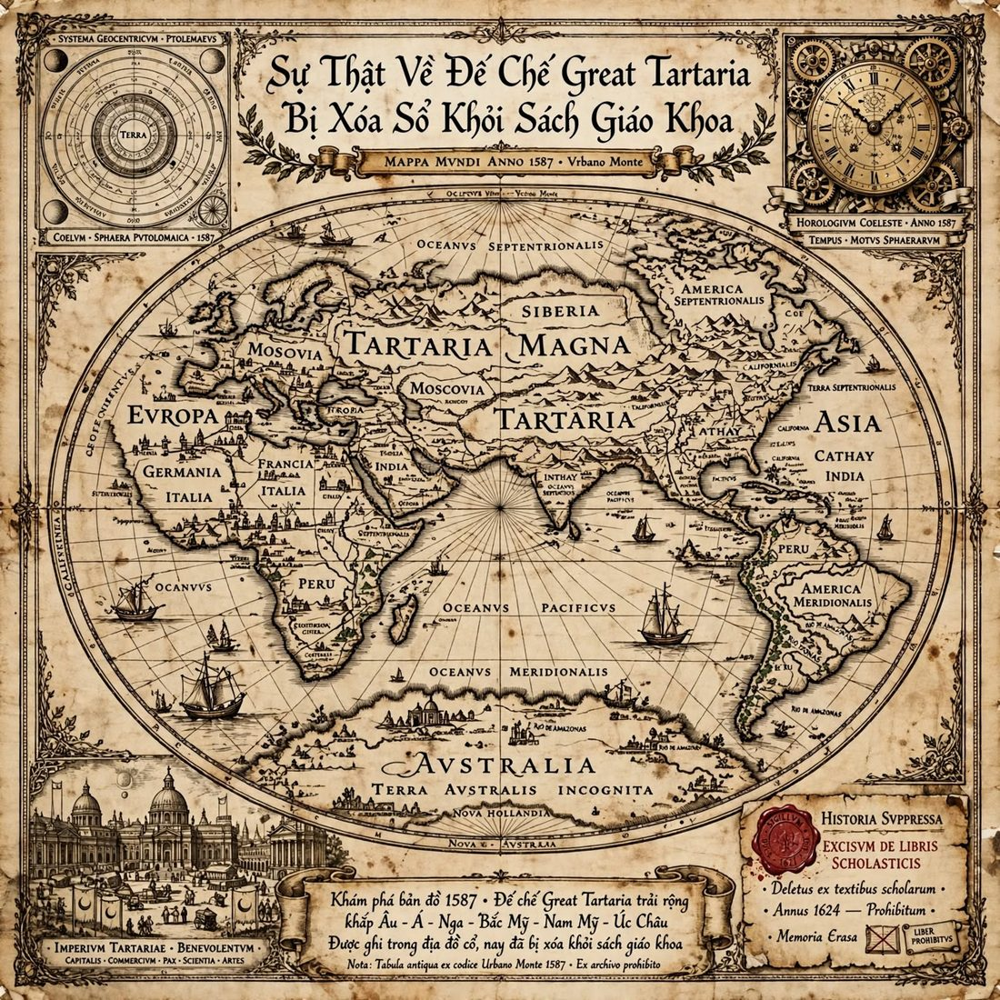
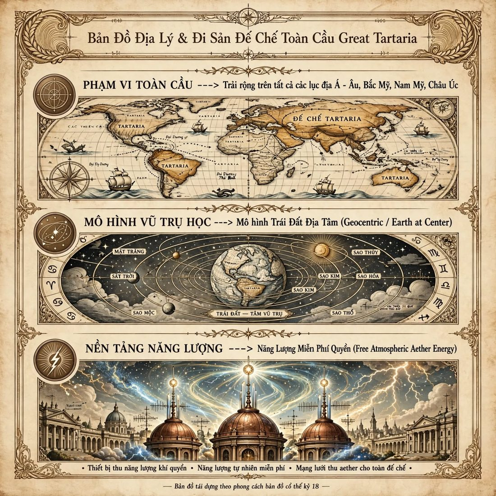
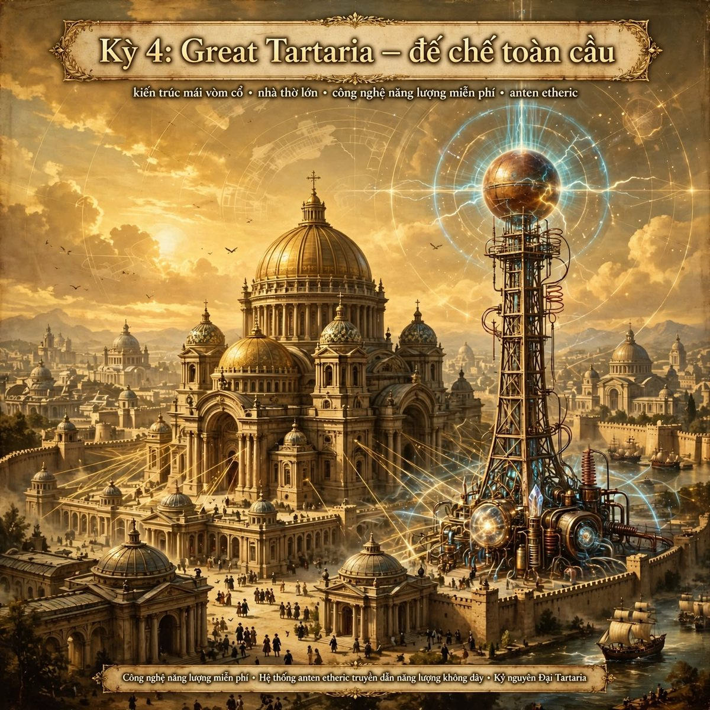
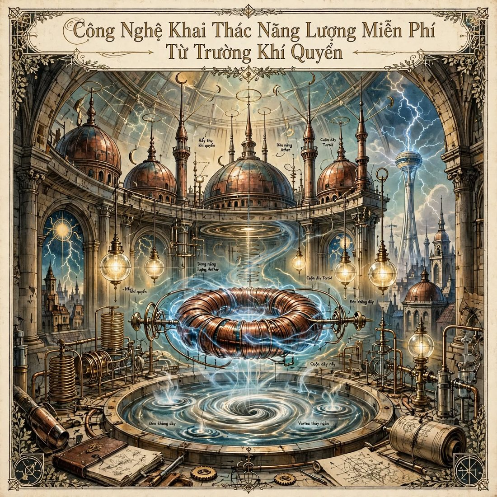
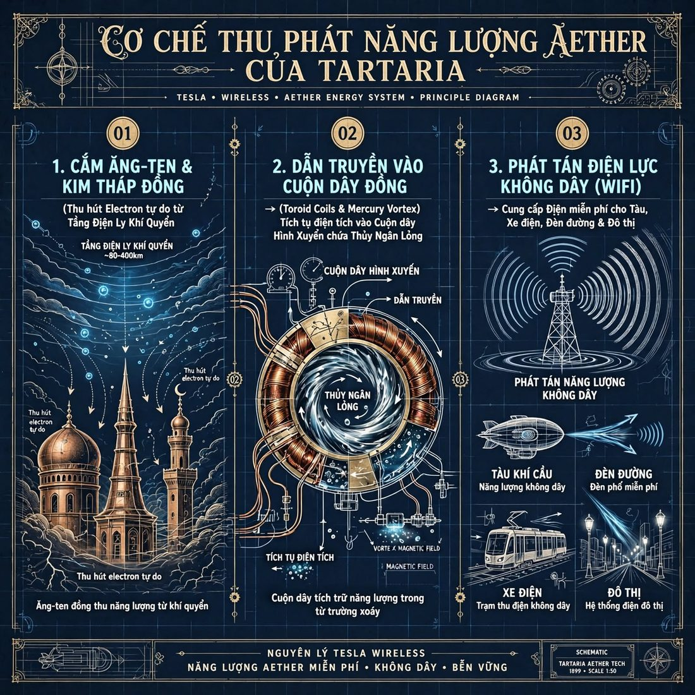
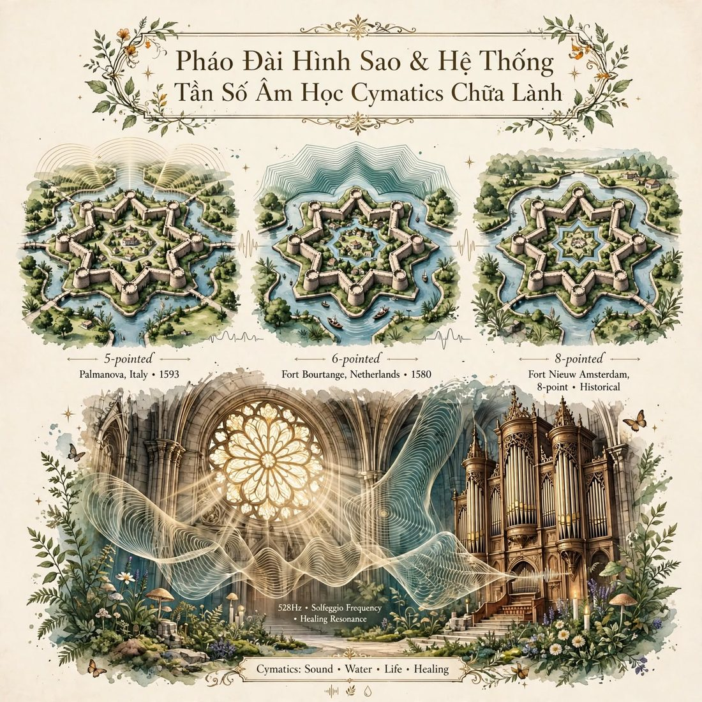
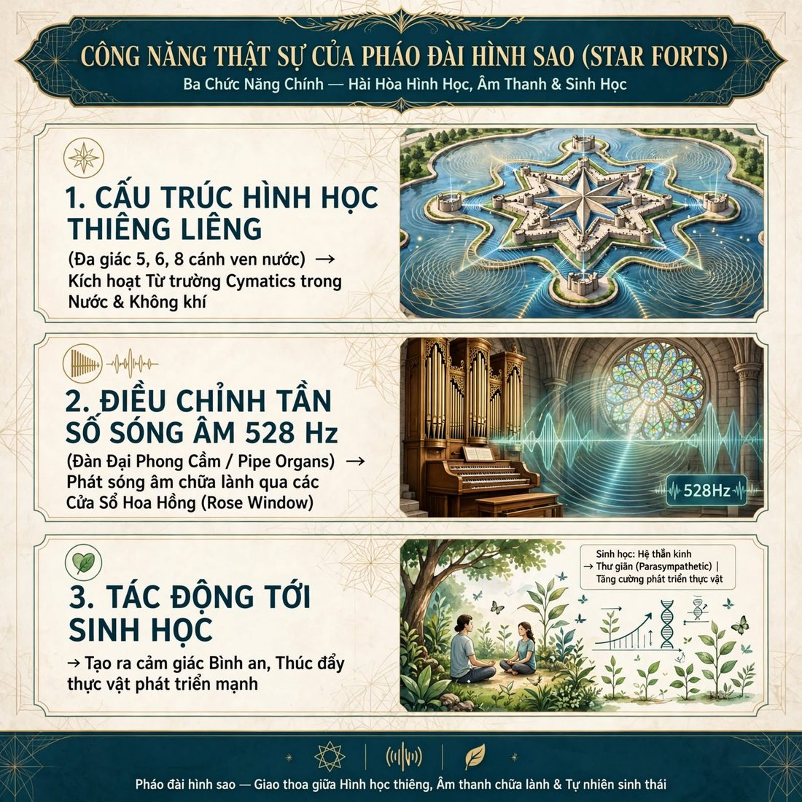
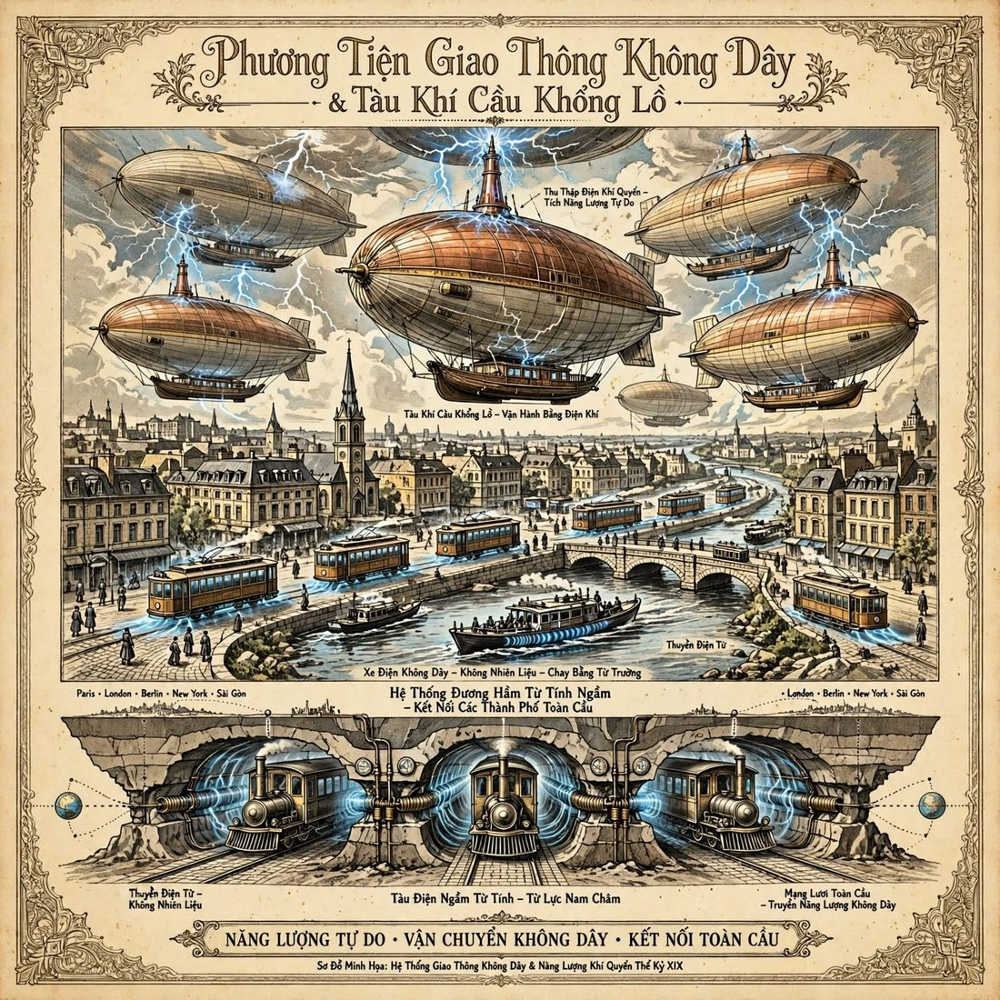
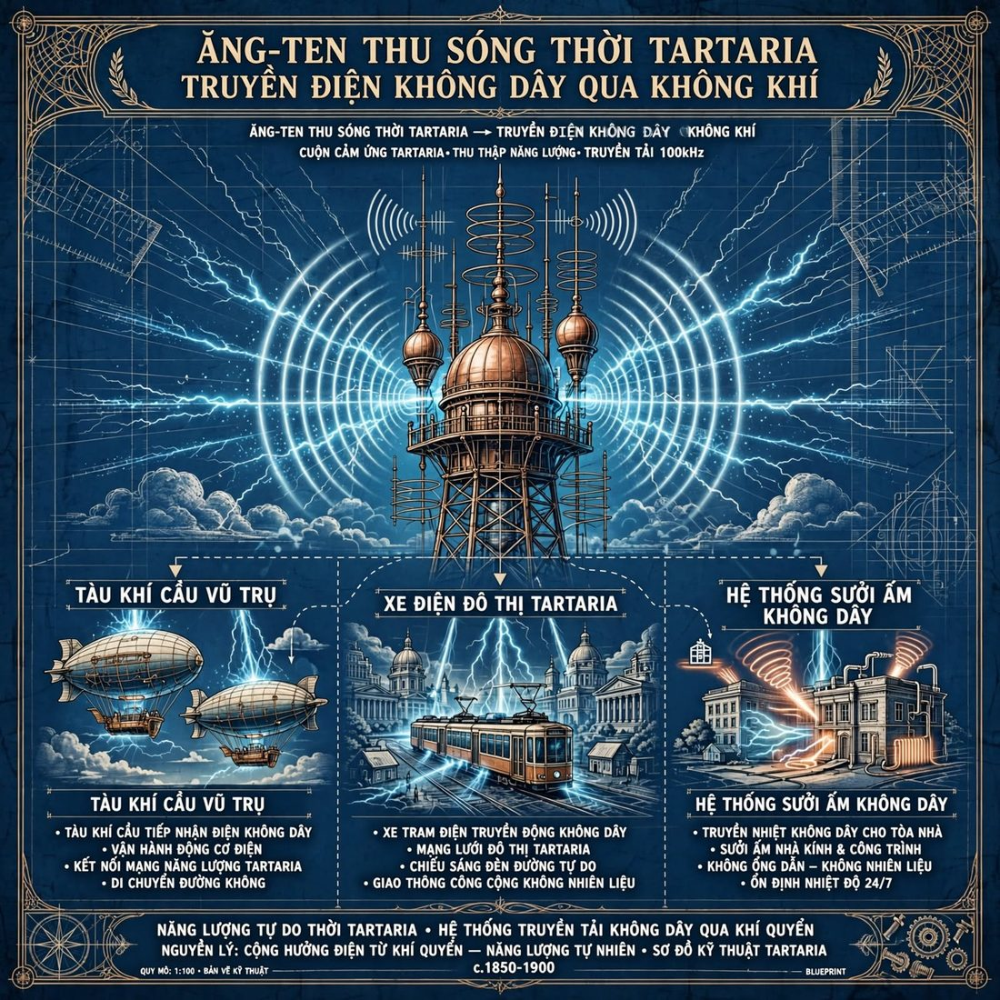
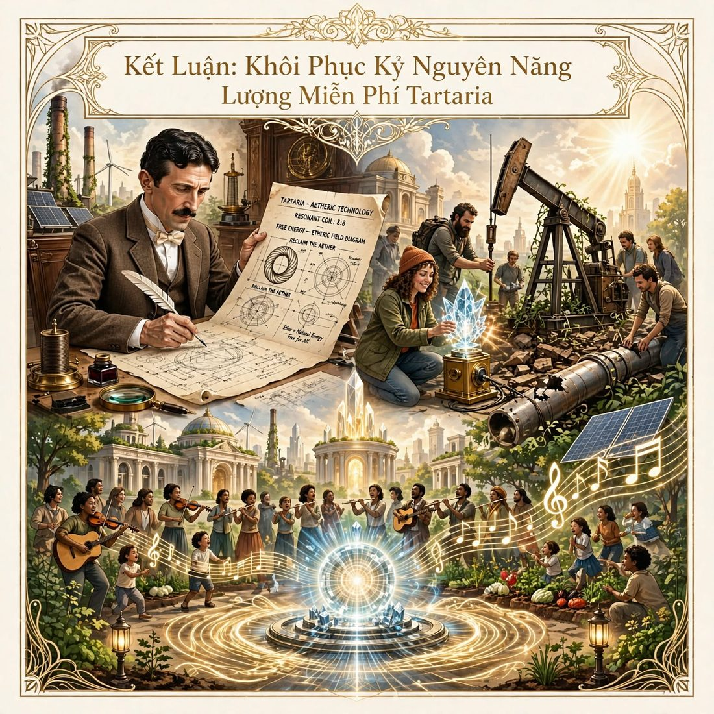

Trang chủ / Chuyên đề 10: Lịch Sử Bị Che Giấu & Nền Văn Minh Cổ Đại / Kỳ 96
Chuyên đề 10 · Kỳ 96 / 100
ĐẾ CHẾ TOÀN CẦU GREAT TARTARIA & CÔNG NGHỆ NĂNG LƯỢNG MIỄN PHÍ TỪ TRƯỜNG

1. Sự Thật Về Đế Chế Great Tartaria Bị Xóa Sổ Khỏi Sách Giáo Khoa


Trong toàn bộ các chiến dịch làm sai lệch lịch sử loài người, việc xóa sổ sự tồn tại của Đế Chế Toàn Cầu Great Tartaria (Đại Tartaria) ra khỏi các cuốn sách giáo khoa lịch sử chính thống trong thế kỷ 20 là một trong những vụ che đậy quy mô lớn nhất.
Theo các tài liệu nghiên cứu lịch sử giải mật từ cuốn One-World-Tartarians, kết hợp với các tấm bản đồ cổ đại trước thế kỷ 19 (như bản đồ phẳng 1587 của Urbano Monte, bản đồ địa lý Châu Âu - Châu Á thế kỷ 17-18), Great Tartaria từng là một Siêu Nền Văn Minh Benevolent Toàn Cầu trải rộng trên toàn bộ lục địa Á - Âu, kéo dài từ Nga, Trung Á, Bắc Mỹ, Nam Mỹ, Châu Âu cho đến tận Châu Đại Dương.
- Xã hội hòa bình & trù phú: Dân số Tartaria bao gồm nhiều chủng tộc hòa hợp (bao gồm cả dòng dõi Moor da màu, chủng tộc da trắng Aryan cao lớn và các cộng đồng bản địa). Xã hội Tartaria không sử dụng tiền tệ kiểm soát, không có nghèo đói hay chiến tranh do sở hữu nguồn tài nguyên và năng lượng miễn phí dồi dào.
- Hệ thống lịch vũ trụ địa tâm (Geocentric Clocks): Người Tartaria sở hữu các đồng hồ thiên văn cực kỳ phức tạp, đặt Trái Đất làm trung tâm sáng tạo của Nguồn. Mô hình này giúp họ căn chỉnh các công trình kiến trúc chính xác theo các chu kỳ chuyển động của từ trường Trái Đất và các chòm sao.
- Mô hình vũ trụ học địa tâm: Trái Đất được đặt ở vị trí trung tâm, khớp với nền tảng năng lượng miễn phí khí quyển (Free Atmospheric Aether Energy) mà nền văn minh này khai thác.

2. Công Nghệ Khai Thác Năng Lượng Miễn Phí Từ Trường Khí Quyển


Thành tựu vĩ đại nhất của nền văn minh Tartaria chính là việc thao tác và thu hoạch Năng Lượng Điện Từ Miễn Phí Từ Trường Etheric Khí Quyển (Free Atmospheric Aether Energy). Khí quyển Trái Đất và tầng điện ly chứa đựng nguồn điện từ vĩnh cửu. Người Tartaria đã xây dựng toàn bộ cơ sở hạ tầng đô thị trên thế giới như những "Nhà Máy Thu Phát Điện Lực Không Dây".
- Mái vòm đồng và kim tiêm (Copper Domes & Spires): Trên đỉnh tất cả các nhà thờ, thánh đường, tòa thị chính và tháp chuông Tartaria đều có gắn các tháp kim tiêm bằng đồng hoặc sắt. Các kim tiêm này không phải để trang trí hay tránh sét, mà là Ăng-ten Thu Năng Lượng Khí Quyển (Atmospheric Antennas).
- Cuộn dây hình xuyến chứa thủy ngân (Toroid Coils & Mercury Vortex): Bên dưới các mái vòm đồng là hệ thống cuộn dây bằng đồng quấn quanh các bình chứa thủy ngân lỏng. Khi xoay tròn trong từ trường, thủy ngân tạo ra phản ứng xoáy plasma điện cực đại, biến đổi điện tĩnh khí quyển thành dòng điện xoay chiều không dây.
- Hệ thống đèn đường không dây (Wireless Lamps): Các bức ảnh chụp đô thị thế kỷ 19 cho thấy các cột đèn đường Tartaria phát sáng rực rỡ mà hoàn toàn không có dây điện nối vào. Năng lượng được truyền trực tiếp qua không khí tương tự như nguyên lý tháp Tesla.
3. Pháo Đài Hình Sao (Star Forts) & Tần Số Âm Học Chữa Lành


Trên khắp thế giới hiện nay vẫn còn tồn tại hơn 700 Pháo đài Hình sao (Star Forts) với cấu trúc hình học thiêng liêng phức tạp (hình đa giác 5 cánh, 6 cánh, 8 cánh) nằm tại các vị trí chiến lược ven sông, bờ biển hay giao điểm kinh mạch địa cầu. Lịch sử 3D giả lập cho rằng đây là "các pháo đài quân sự chống đại bác" được xây dựng ở thế kỷ 17-18 — tuy nhiên, góc quay đại bác hoàn toàn bất khả thi trên các góc tường sao dốc.
- Cộng hưởng nước & từ trường: Nước chảy qua các kênh đào bao quanh pháo đài hình sao được kích hoạt tần số Cymatics, biến nước thành môi trường kiềm hóa tự nhiên, giúp làm sạch không khí và tạo ra cảm giác hạnh phúc, thư thái cho toàn bộ cư dân trong vùng.
- Đàn đại phong cầm & cửa sổ hoa hồng: Bên trong các nhà thờ Tartaria, đàn đại phong cầm không dùng để chơi nhạc tôn giáo đơn thuần. Âm thanh tần số Solfeggio 528 Hz phát ra từ các ống đồng kết hợp với kính màu cửa sổ hoa hồng sẽ khuếch đại sóng âm hình học, trực tiếp chữa lành bệnh tật và tái tạo tế bào cho người dân tham dự.
4. Phương Tiện Giao Thông Không Dây & Tàu Khí Cầu Khổng Lồ
| Phương Tiện Giao Thông | Cơ Chế Năng Lượng Vận Hành | Đặc Điểm Vượt Trội |
|---|---|---|
| Tàu Khí Cầu Khổng Lồ (Airships) | Thu điện từ không khí qua mái vòm đồng trên khí cầu | Du hành bầu trời tự do, êm ái, chở hàng trăm người không tốn nhiên liệu |
| Xe Điện & Tàu Thủy Không Dây | Khai thác điện phân từ nước biển mặn & Ăng-ten thu sóng | Chạy liên tục không cần đổ xăng, không phát thải ô nhiễm |
| Tàu Đệm Từ Ngầm (Subway Tunnels) | Chạy trên lưới từ trường trong mạng lưới đường hầm đá | Nối liền các đại đô thị toàn cầu dưới lòng đất với vận tốc siêu cao |


Văn minh Tartaria làm chủ phương thức di chuyển không giới hạn: tàu khí cầu khổng lồ (Airships) thu điện từ không khí qua mái vòm đồng, du hành bầu trời tự do, êm ái, chở hàng trăm người không tốn nhiên liệu; xe điện và tàu thủy không dây khai thác điện phân từ nước biển mặn và ăng-ten thu sóng, chạy liên tục không cần đổ xăng, không phát thải ô nhiễm; tàu đệm từ ngầm (Subway Tunnels) chạy trên lưới từ trường trong mạng lưới đường hầm đá, nối liền các đại đô thị toàn cầu dưới lòng đất với vận tốc siêu cao.
Ở góc độ hạ tầng, mỗi thành phố Tartaria là một node thu phát năng lượng của mạng lưới toàn cầu: mái vòm đồng thu electron từ tầng điện ly, cuộn dây thủy ngân tích tụ điện tích, và hệ thống phát tán cung cấp điện miễn phí cho tàu xe, đèn đường và các thiết bị dân dụng trong toàn đô thị.
5. Kết Luận: Khôi Phục Kỷ Nguyên Năng Lượng Miễn Phí

Đế chế Great Tartaria là minh chứng lịch sử rõ ràng nhất cho thấy con người Trái Đất đã từng sống trong một xã hội thịnh vượng, tự do năng lượng và hòa hợp tuyệt đối. Nikola Tesla không phải là người tự sáng tạo ra năng lượng miễn phí từ hư không; ông thực chất là một thiên tài đã giải mã và cố gắng tái khôi phục lại công nghệ thu hoạch năng lượng Etheric của văn minh Tartaria cho thế giới hiện đại.
Khi chúng ta nhận diện được sự thật về Great Tartaria, chúng ta tháo bỏ chiếc màng nhận thức bị lừa mị bởi ma trận độc quyền năng lượng hóa thạch; đòi lại quyền bẩm sinh được sử dụng nguồn năng lượng tự do không giới hạn từ Vũ trụ; và sẵn sàng khôi phục lại kiến trúc, âm nhạc chữa lành cùng lối sống trù phú cho Kỷ Nguyên Mới.